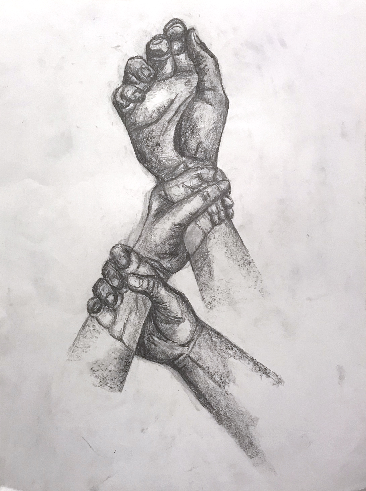
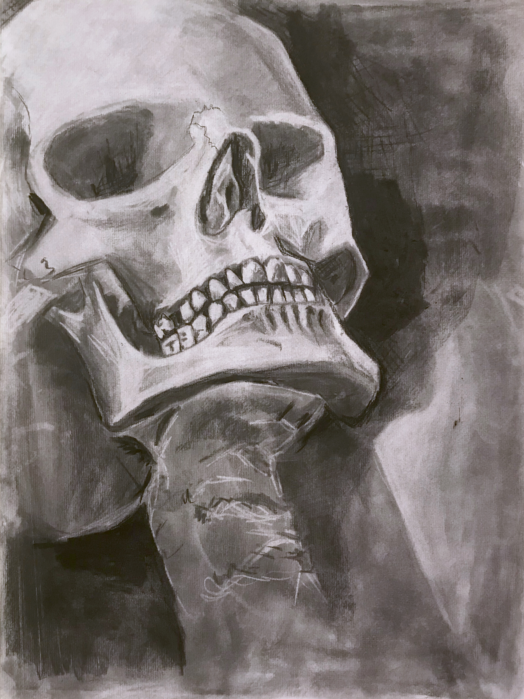
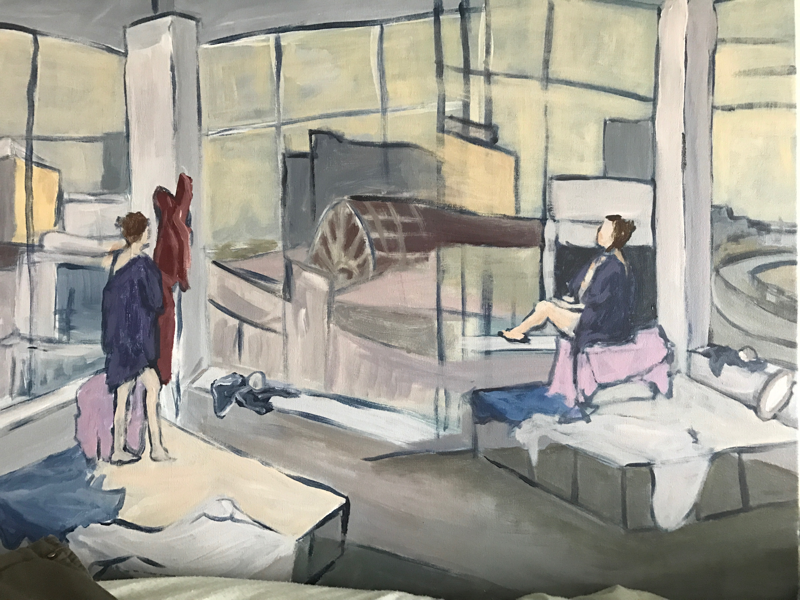

I love exploring aspects of humanity and people through my art. A common theme throughout my pieces is the exploration of the human form and how our interpretations change with different artistic elements. Most of the work featured is from 2012-2018 as I have since transitioned to digital art.







